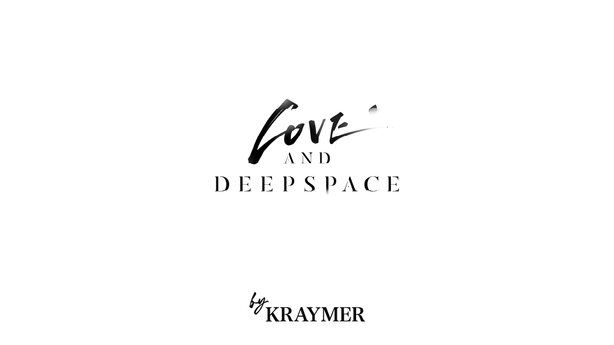
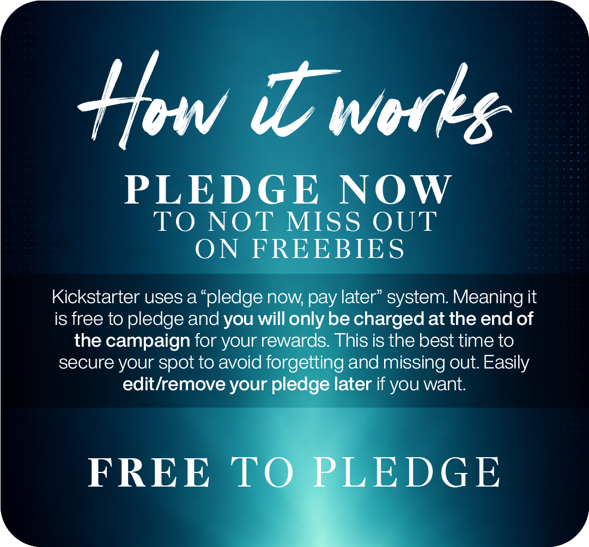
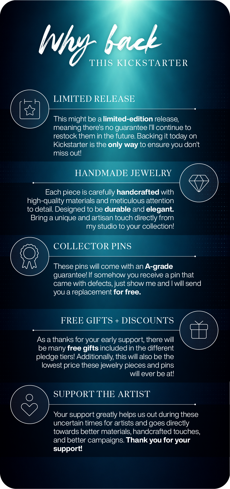
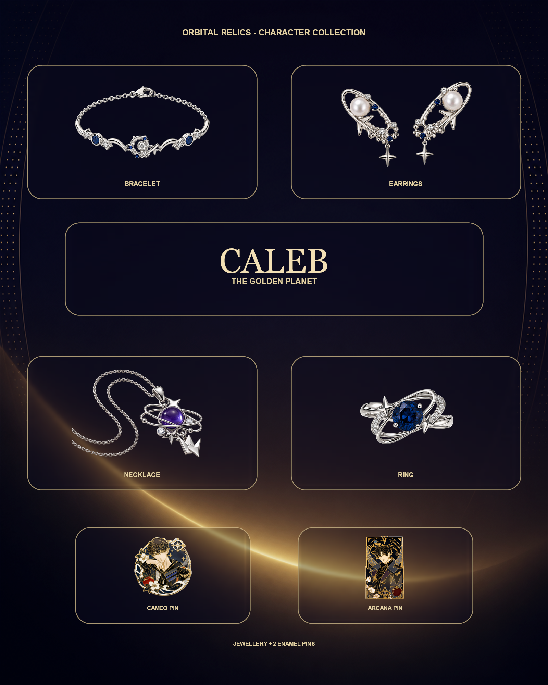
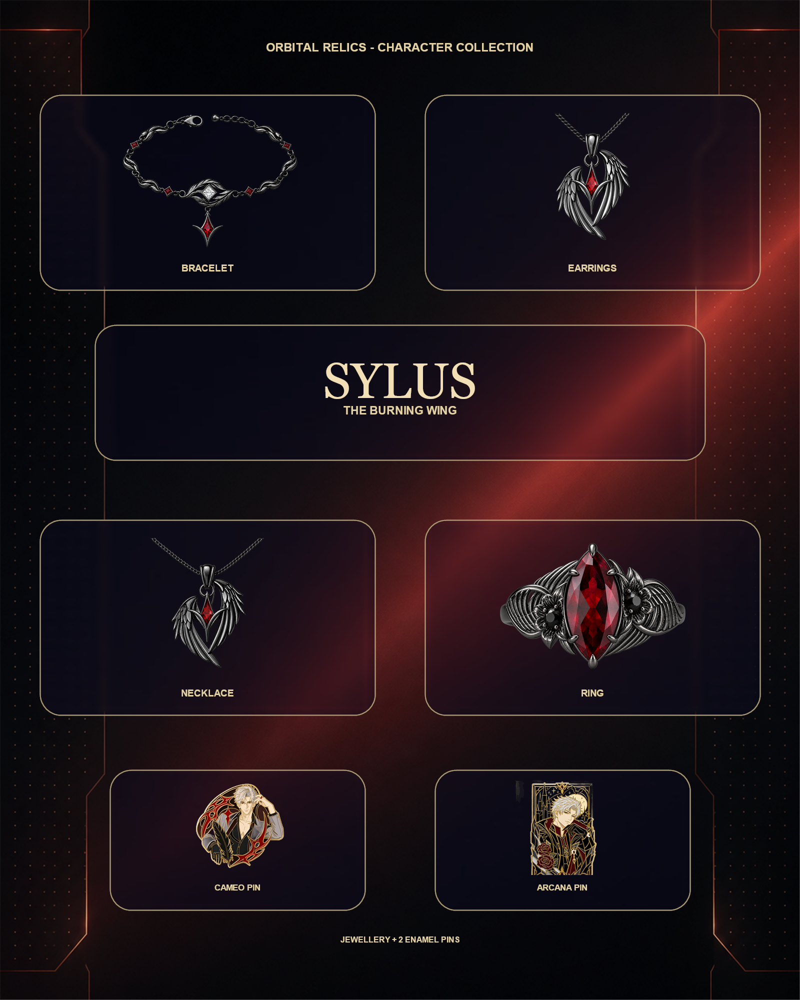
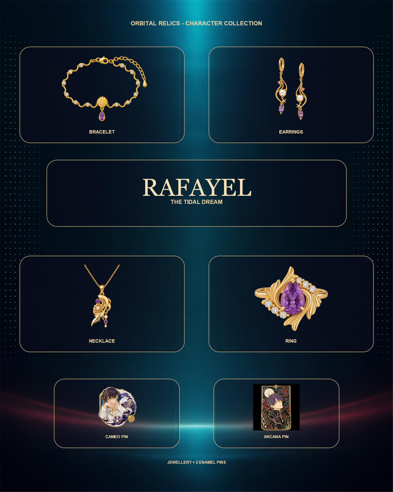
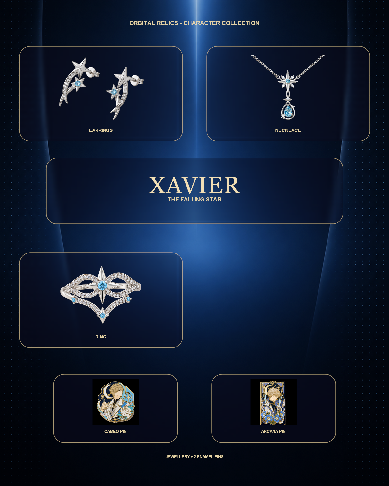
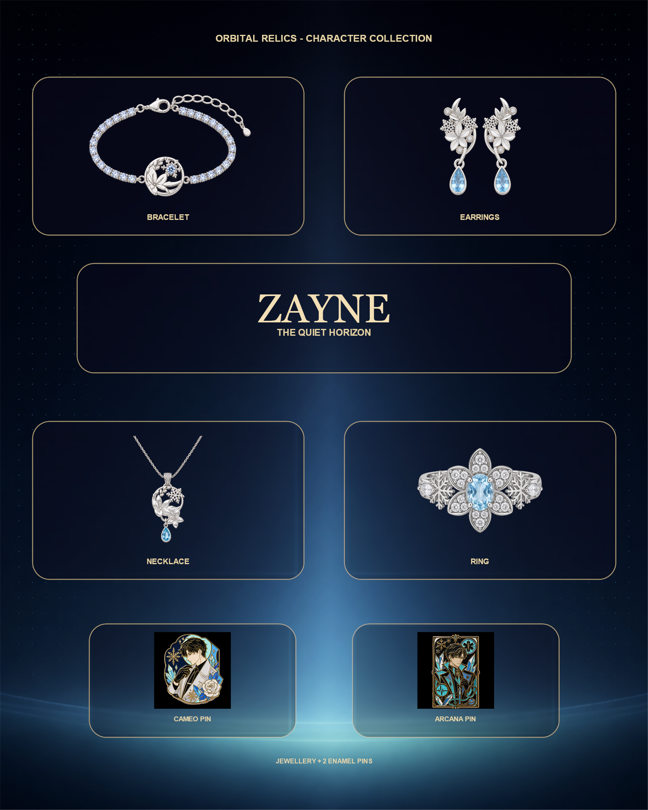
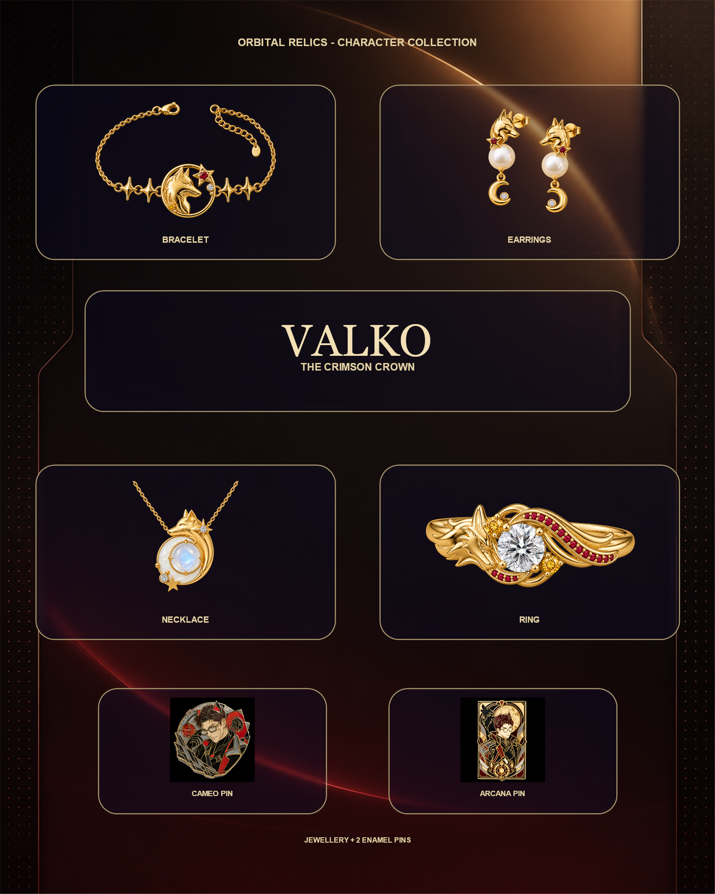

Join us in celebrating the signals between stars with a small constellation of enamel pins! (and one very dramatic comet)
Hi all! I'm Kraymer, you might recognise me from my socials where I'm grateful to have over 130k+ supporters! I've spent over 10 years as an artist, and with this collection, I wanted to create pins that would bring you happiness every time you looked at them, whilst also giving you a way to carry your favourite connection with you every day!


Furthermore, this collection is built around six mains, so however you connect with the story, there's a path made just for you!
Every pin uses hard enamel with a solid layer of 18k gold, and getting that finish right across six completely different colour palettes took a lot of back and forth with my manufacturer (which is why the prices reflect it)!
Once the campaign is over, you'll receive a survey where you'll choose exactly which pins you want + shipping (so you don't need to decide right now! Just choose quantity. Also, you're free to mix mains. For example, for a 5 pin pledge, you could choose 3 pins from one main and 2 from another)






The more funding milestones we hit, the more mains and pieces get unlocked for everyone!
So don't forget to share this with the fellow collectors in your life who'd want in on this too, so we can unlock more stretch goals together!

You'll also be able to add jewellery, keychains and the Ita Bag as post-campaign add-ons. So for everyone pledging for a full main, you'll be able to complete that world's entire wearable line through add-ons after the campaign!


Small business, not a corporation - whatever it takes to make sure you're happy, I'll do it out of my own pocket. Thousands of happy customers across every collection I've made said it better than I can. I'd love for you to join them!


Shipping
I will be working with a shipping partner in Los Angeles to help make the shipping times and cost lower than they normally would be for deliveries to the USA! This will also lower the cost of shipping to other countries as well!
Shipping times (once all pins are finished & ready):
- USA/Canada: 3-6 Days
- Australia/New Zealand: 5-9 Days
- Asia/Europe: 5-9 Days
- Everywhere else: 10-20 Days
☆ All deliveries will include expedited shipping and tracking! ☆
Shipping costs and delivery times listed are estimates and may vary at specific location and other factors at the time of shipment. However, I've already included the packaging and supply costs in the overall funding goal to keep shipping charges as low as possible! The final charge you receive for shipment will also include other fees such as tariffs and taxes.
New Addition: Signal Collector's Club!
Available as an add-on, enjoy the feeling of Christmas every month with this limited-edition mystery box featuring an exclusive Signals Between Stars collectible! These designs are exclusive to the Collector Club Box and will not be available elsewhere - meaning you don't have to worry about duplicates. Each box includes:
- ✓ 1 secret, unreleased enamel pin
- ✓ 1 exclusive limited-edition "Shiny" enamel pin
- ✓ 1 signed Certificate of Authenticity
- ✓ 1 exclusive keychain
- ✓ 1 gold-foil signed art print
- ✓ 3 collectible stickers
Ships every 4 weeks, with the option to pause or cancel anytime!
Risks and challenges
I've run multiple successful Kickstarters now and have delivered thousands of pins to kind supporters! So I have quite a lot of experience now, and the risk for a six-main collection like this one is still quite minimal. I work with experienced, reputable & premium-priced manufacturers and will carefully inspect every pin, from every main, before shipping. I'll keep you updated every step of the way, and if any unexpected issues arise, I'll communicate them transparently through Kickstarter updates.